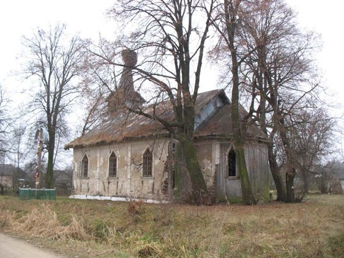
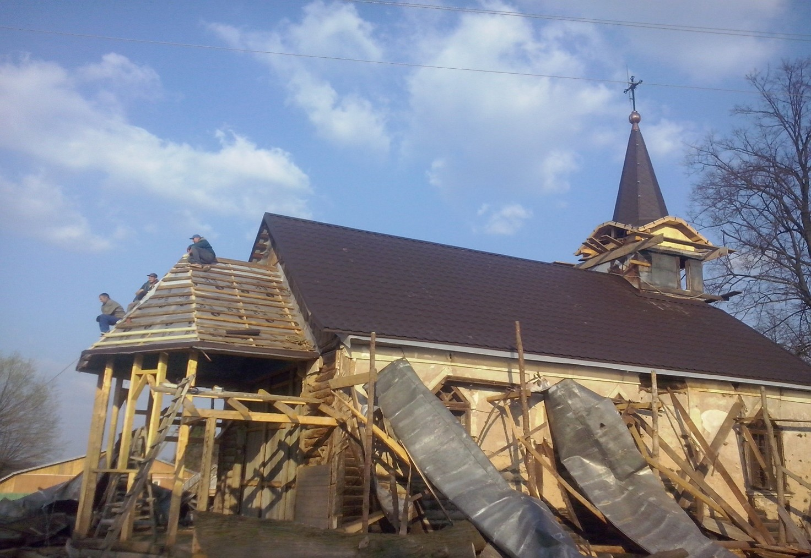
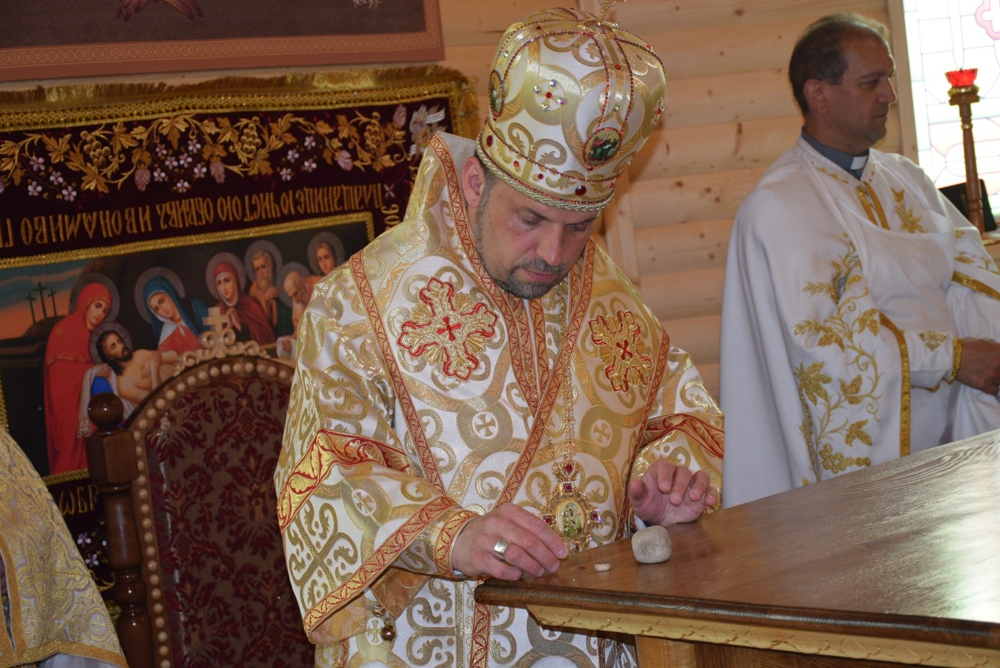
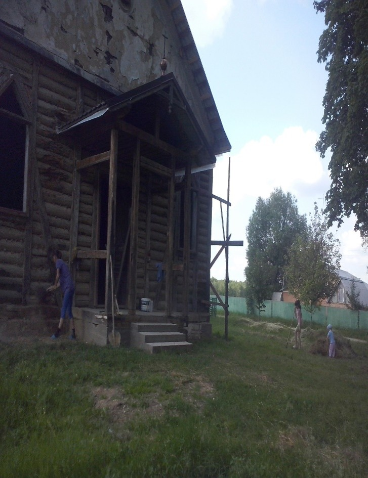
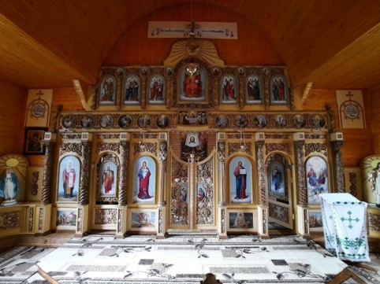
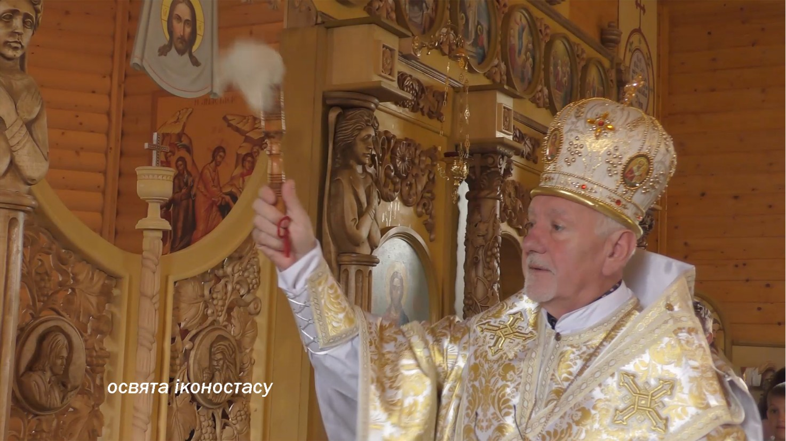
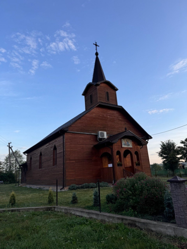
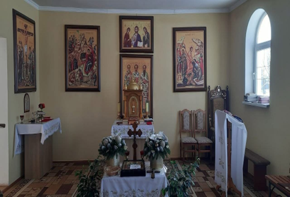
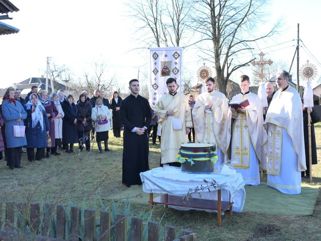

Храм Пресвятої Трійці, с. Нова Липівка
Церква у Новій Липівці — це реставрована дерев'яна німецька кірха, збудована у 1904 році. Її історія тісно пов'язана з німецькою колонізацією Галичини та поселенням німців у цій місцевості. До 1939 року тут проживали німці, а сама місцевість була відома як Сітанерівка. У давні часи територія сучасної Нової Липівки була присілком села Ляцьке, яке згодом перейменували на Липівку. Під час німецької колонізації Галичини тут почали оселятися німецькі поселенці, які прибували до Липівки.
Дерев'яна кірха, яка збереглася у Сітанерівці, є важливою пам'яткою історії цієї місцевості. Інформацію про храм надав дослідник Андрій Костишин. Єдина згадка про кірху в тогочасній літературі була виявлена ним у путівнику О. Федоріва «Івано-Франківськ та область».

Стан храму до реставрації, 2008 р.
Новий етап в історії храму розпочався навесні 2002 року. Саме тоді ієромонахи Никодим Гуралюк та Порфирій Шумило, прямуючи з Погінською іконою Божої Матері, зупинилися біля старої церкви. Біля храму вони звершили молебень до Пресвятої Богородиці. Ця молитва стала своєрідним духовним поштовхом до подальшого відновлення святині та повернення їй належного місця в житті громади. Восени 2004 року на подвір'ї храму було встановлено Хрест, який освятив о. Василь Фіголь. Встановлення Хреста стало ще одним кроком у відродженні святого місця та нагадуванням про його духовне призначення.
У 2013 році розпочато недільні святі Літургії біля хреста та відновлювальні роботи храму. Давню дерев'яну споруду поступово почали повертати до життя, зберігаючи її історичну основу та водночас готуючи храм до нового духовного служіння. Відновлення стало можливим завдяки праці та жертовності людей, які долучалися до відродження святині.



Відновлювальні роботи
Важливою подією в історії відновленого храму стало 29 червня 2014 року. Цього дня у храмі була звершена перша Свята Літургія. Божественну Літургію очолив о. Андрій Кудлик. Ця подія стала особливим моментом у відродженні храму: після багатьох років тиші у його стінах знову залунала молитва Христової Церкви.

Перша Свята Літургія у храмі
11 червня 2017 року відбулася важлива подія — освячення храму. Чин освячення звершив Преосвященний владика Йосафат Мощич, єпископ Івано-Франківський.



Фото освячення храму
Наступним важливим етапом стало встановлення та освячення іконостасу. 17 листопада 2021 року у храмі відбулося освячення іконостасу. Моління очолив Кир Володимир Війтишин, Архієпископ і Митрополит Івано-Франківський. Освячення іконостасу стало ще однією важливою сторінкою в історії відродження храму. Іконостас не лише прикрасив святиню, але й став невід'ємною частиною її літургійного простору, допомагаючи молитовно переживати таїнство Божественної Літургії.

Фото освячення іконостасу
Сьогодні храм у Новій Липівці є свідком складної історії цієї місцевості та водночас знаком її духовного відродження. Від німецької кірхи початку ХХ століття до відновленої святині, у якій знову звершується молитва, Літургія та церковне життя, храм пройшов довгий шлях. Його історія — це не лише історія дерев'яної споруди. Це історія пам'яті, молитви та людей, завдяки яким давня святиня отримала нове життя.

Храм Пресвятої Трійці, 2026 р.
Богослужбова каплиця Трьох Святителів, с. Студинець
Богослужбова каплиця Трьох Святителів розташована у приміщенні колишньої початкової школи. Сьогодні це невелика, але діюча святиня, яка є місцем регулярної молитви для місцевих мешканців. Каплицю відвідують понад 30 парафіян. Щонеділі у каплиці звершується Свята Літургія.

При каплиці служить паламар, діють церковні брати і сестри, вівтарна дружина та спільнота «Матері в молитві». Вівтарна дружина допомагає під час богослужінь, а спільнота «Матері в молитві» об'єднує жінок для спільної молитви за дітей, родини та мир. Поруч із каплицею облаштовано дитячий майданчик, що створює додатковий простір для дітей та родин, які приходять на богослужіння.
Наразі біля каплиці та на самій будівлі проводяться відновлювальні та ремонтні роботи. Зокрема, здійснюється перекриття даху, а також передбачено встановлення купола. Ці роботи мають на меті привести будівлю до належного стану та надати каплиці більш відповідного для богослужбової споруди вигляду.
